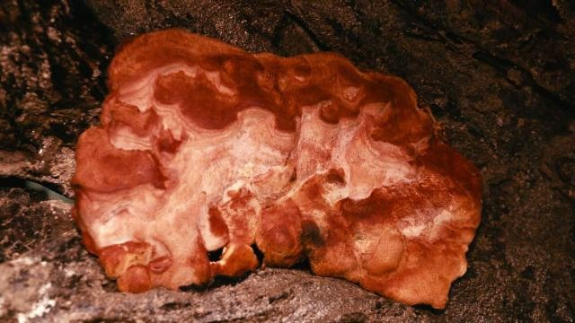

当前位置：网站主页 > 牛樟芝介绍
台湾森林中的红宝石！你所不知道的牛樟芝传奇故事

在台湾，牛樟芝被视为最独特珍贵的药用真菌，因生长缓慢，非常珍贵稀少，在港澳称为“神芝”，台湾民间则称之为“森林中的红
宝石”。全世界只生长在 台湾山区海拔450～2000公尺，老牛樟树腐朽树干的心材内壁，或枯倒在地的牛樟树潮湿表面。属于国宝级的珍
贵药用真菌，经常被应用于养生保健的用途，在所有已知的中草药材里，牛樟芝的抗癌潜力与生物活性遥遥领先，属于目前最为昂贵的野
生真菌，具备极高的药用价值！
施琅将军与台湾牛樟芝结良缘成佳话
清朝1683年(康熙22年)，在“耗死郑氏三代、巧妙平定三番”的天赐良机之时，康熙武力收复台湾的雄心达至顶峰。康熙再度启用猛 将施琅，拜福建总提督、加太子少保、批“施琅专征”，施琅大受鼓舞，“日以继夜，废寐忘食，一面整船，一面练兵，兼工制造器械， 躬亲挑选整搠”，使原来“全无头绪”的水师“船坚兵练，事事全备”。
施琅将军与台湾牛樟芝结良缘成佳话
清朝1683年(康熙22年)，在“耗死郑氏三代、巧妙平定三番”的天赐良机之时，康熙武力收复台湾的雄心达至顶峰。康熙再度启用猛 将施琅，拜福建总提督、加太子少保、批“施琅专征”，施琅大受鼓舞，“日以继夜，废寐忘食，一面整船，一面练兵，兼工制造器械， 躬亲挑选整搠”，使原来“全无头绪”的水师“船坚兵练，事事全备”。